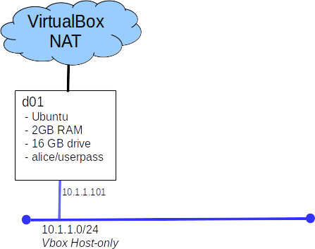

Lab: Intro To Docker
Introduction
Hopefully the reading assignment has peaked your curiosity about Docker. Now's your chance to get a bit of an understanding of how Docker works. This introduction should give you the basic skills you need to start designing and building Docker environments to satisfy the requirements of the projects to follow. It will not cover everything you need to know, there will be more research and experimentation required.
Today you will:
- Use Docker CE on Ubuntu
- Run some pre-built images
- Build your own image
- Publish your image to the public Docker repository
Upon completion you should:
- Know the difference between and image and a container
- Know how to run containers
- Know how to publish containers
- Have some questions like:
- How do I manage network connections?
- How do I manage persistent storage?
- What's a swarm, and how do I build one?
- What would be some good scenarios in which to use Docker?
- How do I mange user accounts within a container?
Part A: Build a Docker host
We are going to use Docker CE on Ubuntu. A VirtualBox appliance is provided for your convenience.

- Import the VM from this appliance: d01_(10.1.1.101).ova found on Canvas.
- use the account: alice with the password userpass
You may find the Distro Decoder helpful
Part B: Running your first container
Part C: Running web apps
Walk through this guide: 2.0 WebApps with Docker
(note: the image files used in this demo are not available, the application will work but you won't see the nice cat pictures.)
Part D: Apply your knowledge
Now that you know the basics of Docker and containers, it is time to apply what you have learned. You will build and publish a static web site container with custom content.
- Use this image as a base: Docker httpd image
- Write a Dockerfile to reference the base image, copy in your content, and declare what ports should be exposed. This will be a short file
- Your site must contain:
- A default home page, stating your name and student number
- Your home page must have at least one link to an other page hosted by your container
- Publish(push) your image to the public docker registry
- you will need to create an account
- name your image YOUR_USERNAME/lab1_apache
- make sure the image is public
- have a classmate, try pulling and running your image
- Grading: Submit your Dockerfile to the eLearn dropbox for this lab. Place the name of your image, in the comments section, so your instructor can pull it. Make sure your Dockerfile includes a statement of authorship.